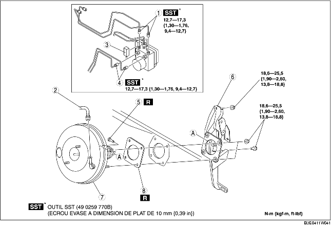

1. Déposer la batterie et le support de batterie. (voir la section DEPOSE/REPOSE DE BATTERIE [ZJ, Z6].) (voir la section DEPOSE/REPOSE DE BATTERIE [LF].)
2. Déposer le maître-cylindre. (voir la section DEPOSE/REPOSE DE MAITRE-CYLINDRE.)
3. Déposer le connecteur du contacteur de frein.
4. Déposer la pédale d'accélérateur. (voir la section DEPOSE/REPOSE DE PEDALE DE FREIN.)
5. Déposer les différents éléments selon l'ordre indiqué dans le tableau.
6. Pour la repose, suivre l'ordre inverse de la dépose.
7. Inspecter la pédale de frein. (voir la section INSPECTION DE PEDALE DE FREIN.)
8. Ajuster le câble d'accélérateur. (voir la section INSPECTION/RÉGLAGE DE CÂBLE D'ACCÉLÉRATEUR [ZJ, Z6].) (voir la section INSPECTION/RÉGLAGE DE CÂBLE D'ACCÉLÉRATEUR [LF].)

.
|
1
|
Tuyau de frein
|
|
2
|
Flexible à dépression
(voir la section DEPOSE/REPOSE DE LA FLEXIBLE A DEPRESSION.)
|
|
3
|
Connecteur
(voir la section Note sur la dépose de connecteur.)
|
|
4
|
Tuyau de frein
|
|
5
|
Axe d'articulation
(voir la section DEPOSE/REPOSE DE PEDALE DE FREIN.)
|
|
6
|
Composant de pédale de frein
(voir la section Note sur la dépose de composant de pédale de frein.)
|
|
7
|
Unité de frein mécanique
|
|
8
|
Joint
|
1. Déposer le boulon et les écrous de fixation de la pédale de frein.
2. Déplacer l'unité de pédale de frein vers l'arrière du véhicule.
3. Déposer le composant de pédale de frein.